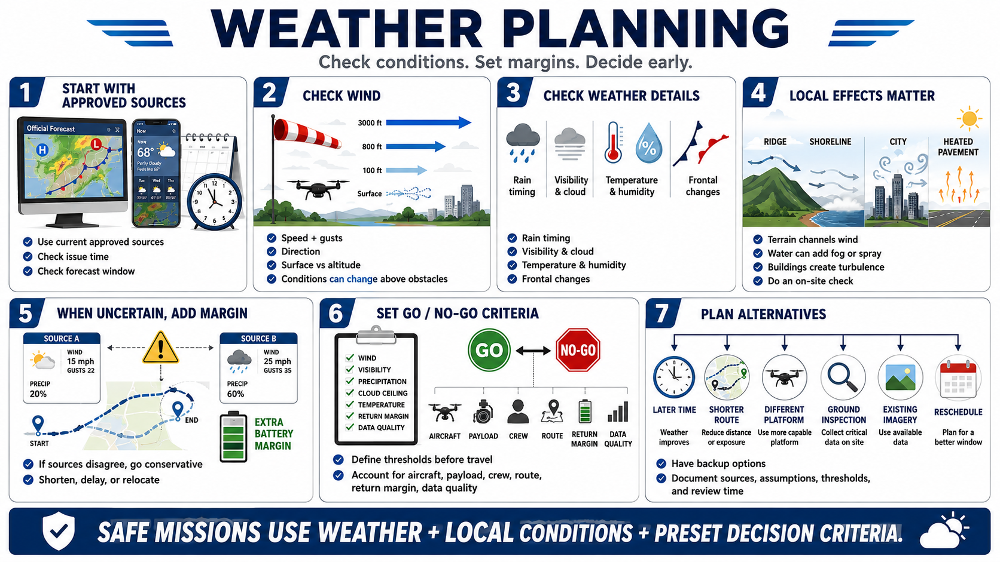

Weather Planning Before Flight
Connecting to LMS... Progress: in progress

Narration
Weather planning begins with current official or otherwise approved sources appropriate to the location and operation. Review when the forecast was issued, the period it covers, and whether changing conditions are expected before, during, or after the mission.
Check wind speed, gusts, direction, and expected changes at the surface and relevant altitude. A sheltered launch point may not represent conditions above trees, buildings, ridges, or shoreline terrain.
Review precipitation probability, type, timing, visibility, cloud, temperature, humidity, and significant pressure or frontal changes where relevant. A percentage alone does not show whether rain will arrive during recovery or how intense it may be.
Consider local effects. Terrain can channel wind, water can produce fog or spray, buildings can create turbulence, and sun-heated surfaces can generate unstable air. Prior site knowledge and an on-site check remain necessary.
Forecast uncertainty should increase margin rather than confidence. When sources disagree or a front may arrive near recovery time, choose the more conservative interpretation and shorten, delay, or relocate the mission.
Define go or no-go criteria before travel and before organizational pressure to complete the flight increases. Criteria should reflect current rules, aircraft and payload guidance, crew experience, route complexity, return margin, and data-quality needs.
Plan alternatives: a later time, shorter route, different authorized platform, ground inspection, existing imagery, or rescheduling. Document sources, assumptions, thresholds, and review time so the decision can be explained and updated.